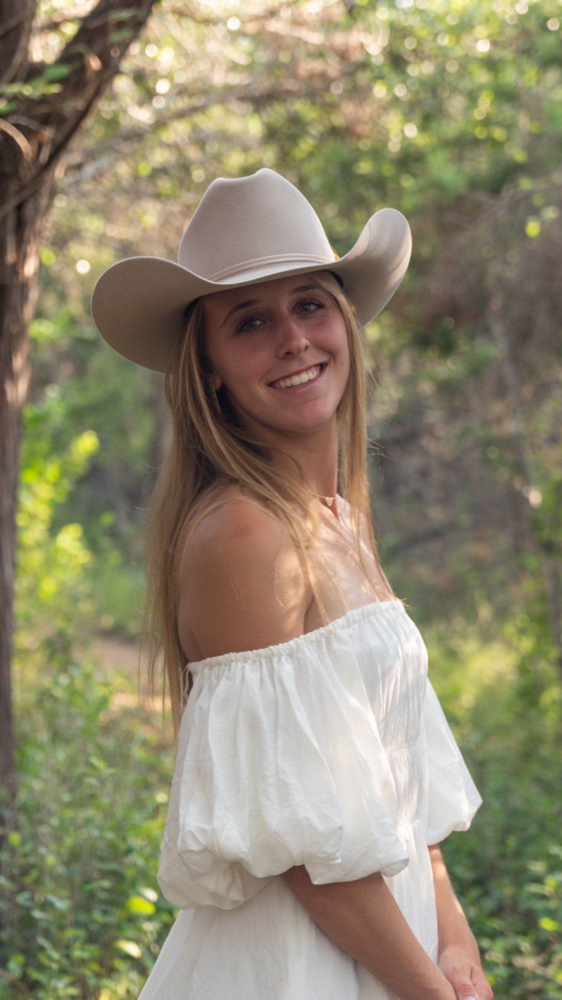
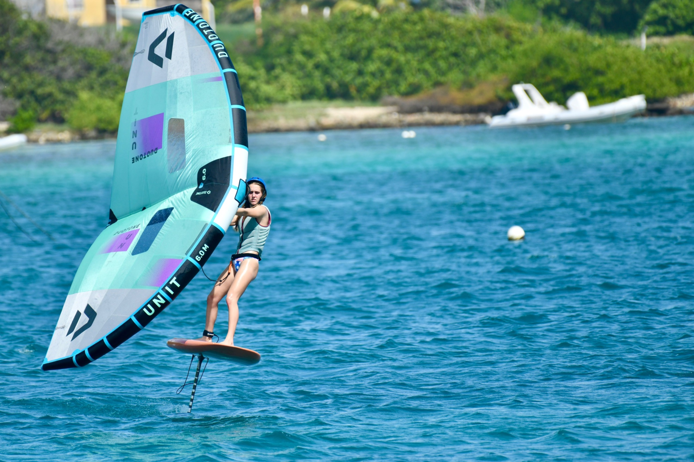
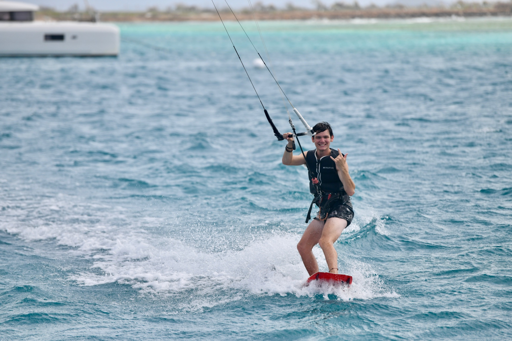
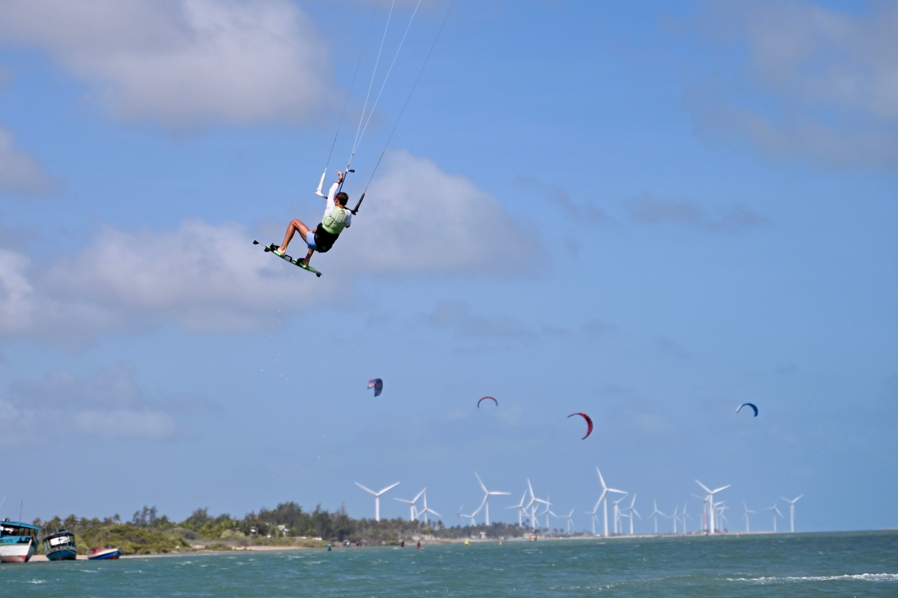

Elena grew up right here in Steiner Ranch with Lake Austin practically in her backyard — and three younger siblings who made sure life was never boring. She got on her first board at 8 years old and never looked back — wakesurfing quickly became a passion, then a lifestyle, and eventually a calling.
What started as teaching friends for fun turned into something bigger when Elena realized how much she loved watching people light up the moment they get up for the first time. After four years of teaching riders from age 6 to 62, she's never once failed to get someone up — and that streak means everything to her.
Off the water, Elena is studying Mechanical Engineering at the University of Alabama, where she also competes on the club soccer team. She played varsity soccer at Vandegrift High School and brings that same competitive drive and team-first mentality to every session on the lake. She also served as the Head Soccer Coach and Cross Country Coach at International School of Texas, where her passion for coaching and working with young athletes only grew stronger. Her energy is contagious, her patience is endless, and her love for this sport is the real deal.
When she's not coaching wakesurf or wakeboard, you'll likely find her kiteboarding or wing foiling — two more water sports she's deeply passionate about and loves sharing with anyone curious enough to try.
Every session is better with the right people on the boat. Our crew brings skill, good energy, and a whole lot of fun to every single day on the lake.


Book a private lesson, a camp spot, or a group event — we'd love to get you out on the water.